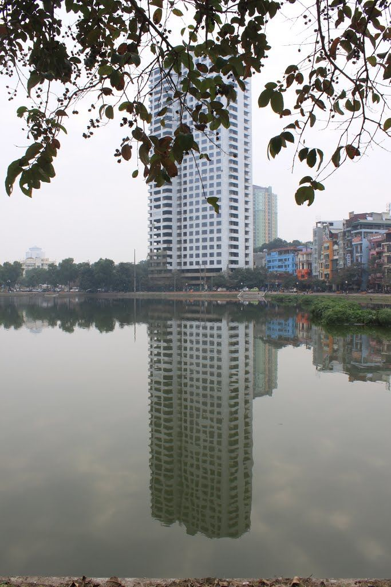
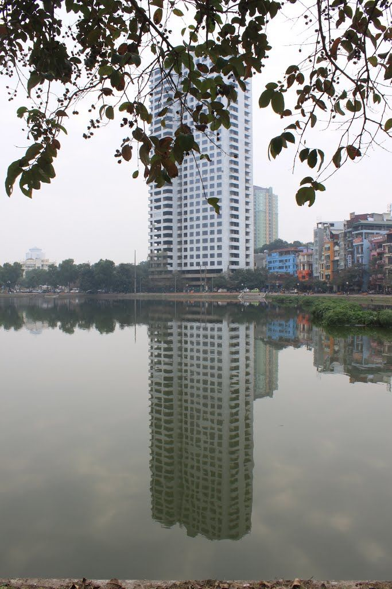
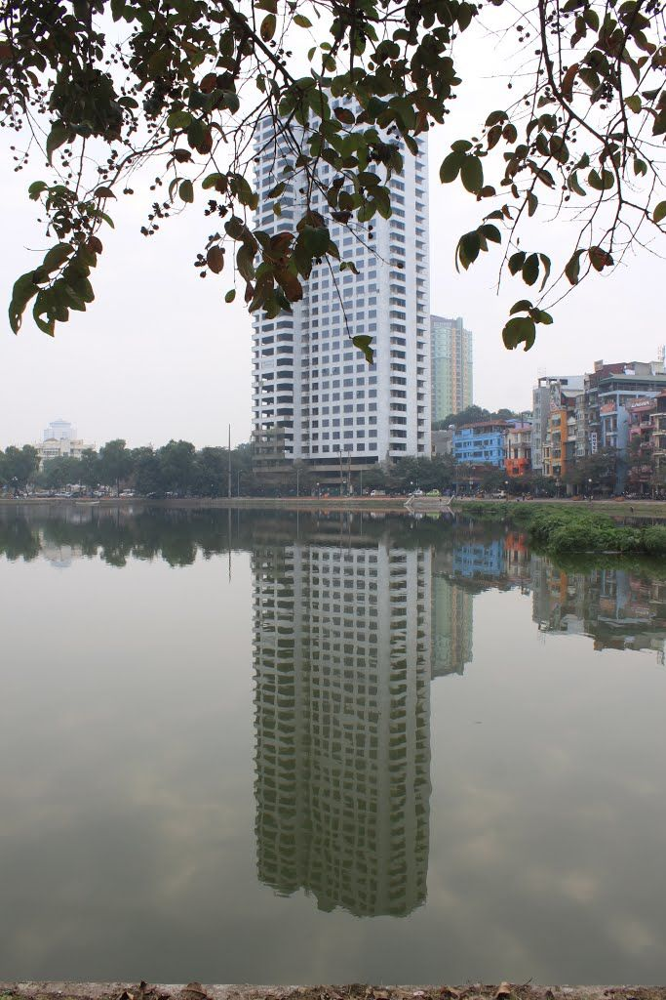

.jpg "hồ ngọc khánh")
Hồ Ngọc Khánh là một trong những điểm vui chơi công cộng của Hà Nội, hàng ngày hồ Ngọc Khánh thu hút khá đông người dân đến để ngắm cảnh, nghỉ ngơi.
Hồ Ngọc Khánh (quận Ba Đình) là một trong những hồ rộng và thoáng của Thủ đô. Thời gian qua, được thành phố và quận đầu tư cải tạo, lòng hồ được nạo vét, phố Phạm Huy Thông bao xung quanh hồ được nâng cấp, vỉa hè được lát gạch, bó vỉa chống sụt lở rất chắc chắn. Nhiều cây xanh được trồng xung quanh hồ tạo cho cảnh quan rất thơ mộng, là nơi khá lý tưởng cho người dân, nhất là các cụ cao tuổi thả bộ thư giãn.
Tuy nhiên, thời gian gần đây, cảnh quan hồ Ngọc Khánh đang bị xâm hại bởi sự thiếu ý thức và tùy tiện của một số người dân sống quanh hồ. Lòng đường và vỉa hè xung quanh hồ có rất nhiều chỗ bị các cửa hàng ăn uống, giải khát chiếm dụng làm nơi đỗ xe ô tô, xe máy của khách và bày đặt bàn ghế bán hàng. Không chỉ có vậy, trên nhiều cây xanh quanh hồ còn bị treo móc quần áo rất mất mỹ quan. Ở một góc lòng hồ, rác phế thải “trú ngụ”, bị gió thổi giạt vào bờ nổi từng mảng lớn.

Cảnh quan môi trường khu vực hồ Ngọc Khánh đang bị xâm hại. Đề nghị chính quyền địa phương, cơ quan chức năng sớm có biện pháp khắc phục nhằm trả sự thông thoáng, mỹ quan cho hồ, để hồ Ngọc Khánh thực sự là một trong những viên ngọc của thành phố, là điểm đến của du khách gần xa...